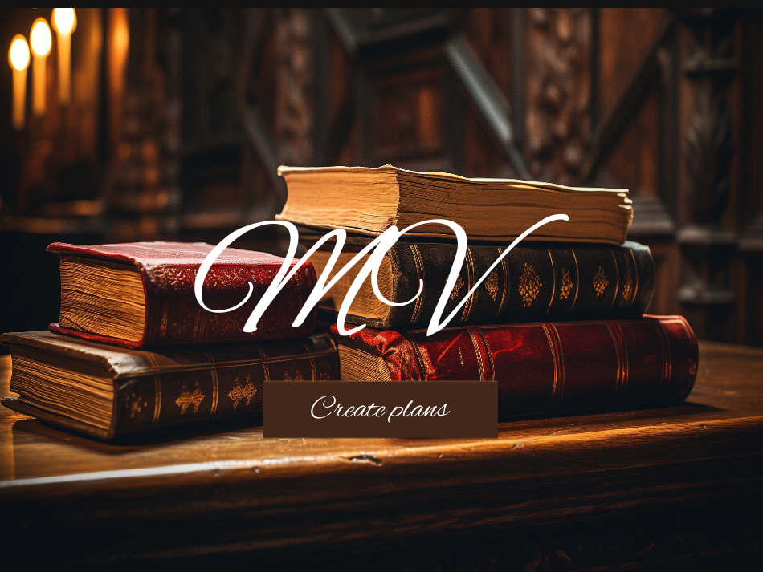
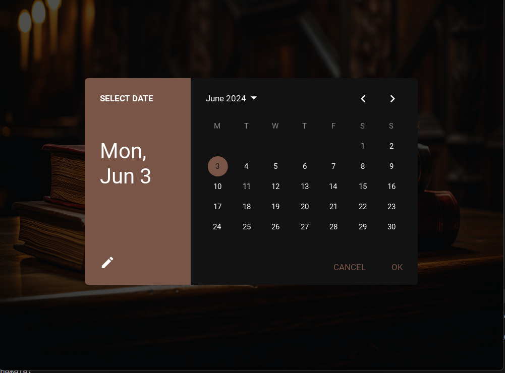
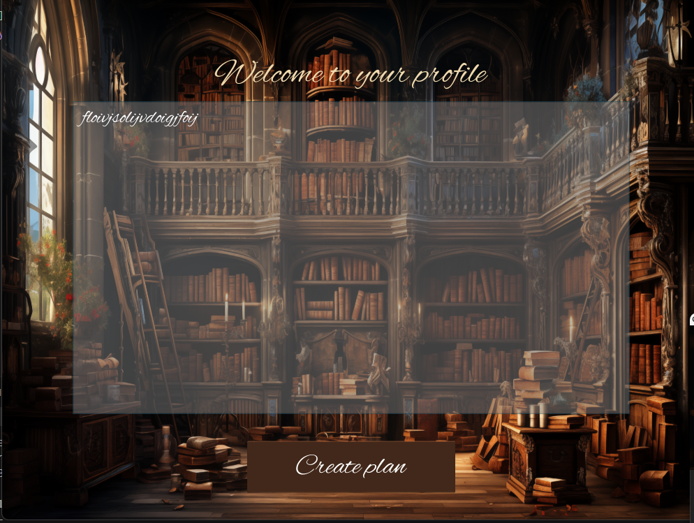
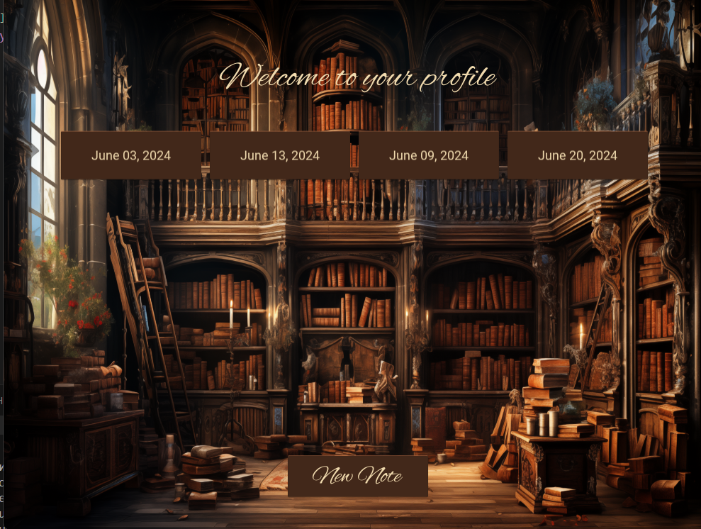
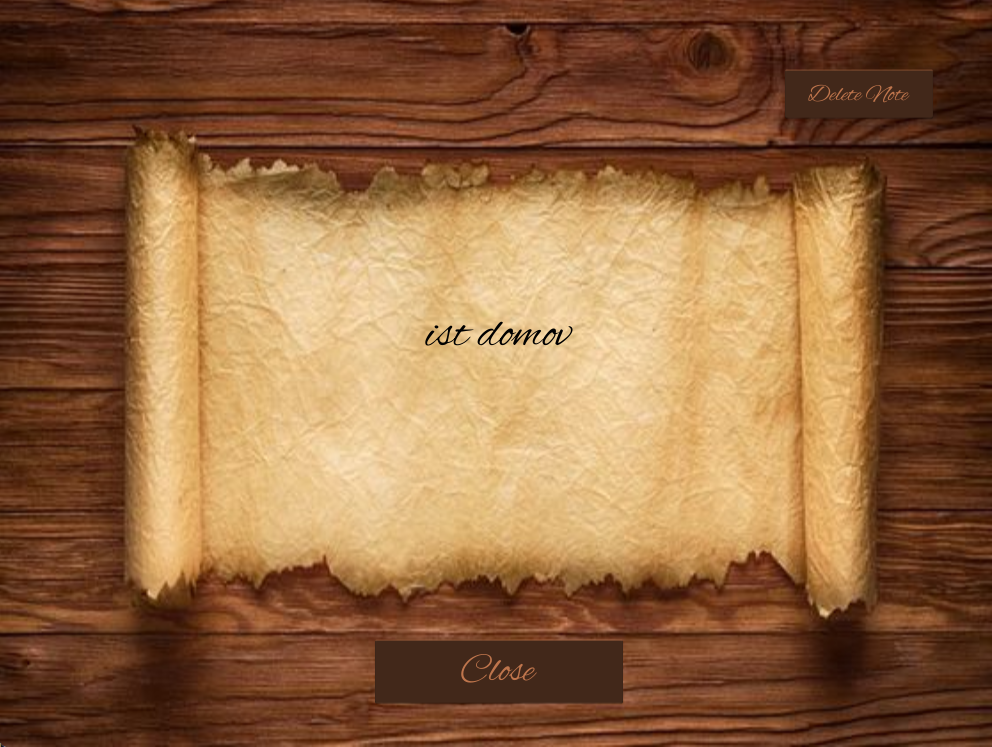

MV is an application for recording notes or plans on a date selected by the user. The name of the application is based on my initials. The main goal of creating this application is to simplify note-taking on a PC, providing a user-friendly interface for people of all ages while maintaining a medieval aesthetic.
The application is developed using the following technologies:
- Python – the main programming language.
- Kivy – a library for creating the user interface.
- KivyMD – a library extending Kivy with Material Design components.
- SQLite – an embedded database for storing notes.
- Datetime – for working with dates and times.
from datetime import datetime
from kivy.uix.boxlayout import BoxLayout
from kivy.uix.label import Label
from kivy.uix.floatlayout import FloatLayout
from kivy.uix.image import Image
from kivy.uix.button import Button
from kivy.uix.screenmanager import ScreenManager, Screen
from kivymd.app import MDApp
from kivymd.uix.pickers import MDDatePicker
from kivy.uix.textinput import TextInput
import sqlite3
from kivy.uix.scrollview import ScrollView
from kivy.uix.gridlayout import GridLayout
from kivymd.uix.dialog import MDDialog
from kivymd.uix.button import MDFlatButton
from functools import partial
from kivy.clock import Clock
The main screen includes a background image and a button to create plans. After clicking the button, the user is taken to the second screen.
def build(self):
self.screen_manager = ScreenManager()
main_screen = Screen(name='main')
layout = BoxLayout(orientation='vertical', spacing=10, padding=10)
float_layout = FloatLayout(size=(300, 200), pos_hint={'center_x': 0.5, 'center_y': 0.5})
background = Image(source='for_mv.png', allow_stretch=True, keep_ratio=False)
float_layout.add_widget(background)
labelA = Label(text="MV", font_size=200, font_name='your-path/font.ttf')
labelA.pos_hint = {'center_x': 0.5, 'center_y': 0.5}
float_layout.add_widget(labelA)
button = Button(
text='Create plans',
font_size=40,
size_hint=(0.3, 0.1),
pos_hint={'center_x': 0.5, 'center_y': 0.3},
font_name='your-path/font.ttf',
background_color=(0.75, 0.46, 0.30, 1),
)
button.bind(on_press=self.on_button_press)
float_layout.add_widget(button)
layout.add_widget(float_layout)
main_screen.add_widget(layout)
self.screen_manager.add_widget(main_screen)
# Initialize theme and screen manager
self.theme_cls.theme_style = "Dark"
return self.screen_manager

On the second screen, the user can select a date to create a note. The MDDatePicker component is used for date selection.
def show_second_screen(self):
second_screen = Screen(name='second')
layout = FloatLayout()
background = Image(source='your/picture/path.png', allow_stretch=True, keep_ratio=False)
layout.add_widget(background)
self.date_dialog = MDDatePicker()
self.date_dialog.theme_cls.primary_palette = 'Brown'
self.date_dialog.bind(on_save=self.on_date_selected, on_cancel=self.on_cancel)
self.date_dialog.open()
second_screen.add_widget(layout)
self.screen_manager.add_widget(second_screen)
self.screen_manager.current = 'second'

The third screen allows the user to enter the note text. It also includes a background image and a button to save the note. If there is already a note for the selected date, the user is prompted to update it or create a new one.
def show_third_screen(self, instance):
if not self.screen_manager.has_screen('third'):
third_screen = Screen(name='third')
layout = FloatLayout()
image_path = 'your/picture/path.png'
image = Image(source=image_path, allow_stretch=True, keep_ratio=False)
layout.add_widget(image)
font_path = 'your/font/path.ttf'
label = Label(
text="Welcome to your profile",
size_hint=(None, None),
pos_hint={'center_x': 0.5, 'center_y': 0.85},
height=40,
font_size=50,
font_name=font_path,
color=(240 / 255, 218 / 255, 174 / 255, 1)
)
self.text_input = TextInput(
font_name=font_path,
multiline=True,
size_hint=(0.8, 0.6),
pos_hint={'center_x': 0.5, 'center_y': 0.5},
font_size=30,
background_color=(0.5, 0.5, 0.5, 0.5),
foreground_color=(1, 1, 1, 1),
cursor_color=(0.75, 0.46, 0.30, 1),
cursor_width=2,
on_text=self.process_task_text
)
layout.add_widget(label)
layout.add_widget(self.text_input)
buttonV = Button(
text='Create plan',
font_size=40,
size_hint=(0.3, 0.1),
pos_hint={'center_x': 0.5, 'center_y': 0.1},
font_name=font_path,
background_color=(0.75, 0.46, 0.30, 1),
)
buttonV.bind(on_press=self.on_buttonV_press)
layout.add_widget(buttonV)
third_screen.add_widget(layout)
self.screen_manager.add_widget(third_screen)
self.screen_manager.current = 'third'

The notes screen shows the text of notes saved for the selected date. It also includes buttons for closing the screen and deleting notes.
def show_notes_screen(self, date):
notes_screen = Screen(name='notes')
background = Image(
source='path/to-your/image.jpg',
allow_stretch=True,
keep_ratio=False
)
layout = FloatLayout()
layout.add_widget(background)
notes = self.get_notes_for_date(date)
font_path = 'path/your/font.ttf'
label = Label(
text="My notes",
font_name=font_path,
font_size=60,
size_hint=(None, None),
pos_hint={'center_x': 0.5, 'center_y': 0.9},
color=(240 / 255, 218 / 255, 174 / 255, 1)
)
layout.add_widget(label)
text_input = TextInput(
text=notes,
font_name=font_path,
font_size=40,
size_hint=(0.8, 0.5),
pos_hint={'center_x': 0.5, 'center_y': 0.6},
readonly=True,
background_color=(0.5, 0.5, 0.5, 0.5),
foreground_color=(1, 1, 1, 1),
cursor_color=(0.75, 0.46, 0.30, 1),
cursor_width=2
)
layout.add_widget(text_input)
close_button = Button(
text='Close',
size_hint=(None, None),
size=(200, 60),
pos_hint={'center_x': 0.5, 'center_y': 0.1},
font_name=font_path,
background_color=(0.75, 0.46, 0.30, 1),
color=(240 / 255, 218 / 255, 174 / 255, 1),
font_size=35
)
close_button.bind(on_press=self.on_close_button_press)
layout.add_widget(close_button)
delete_button = Button(
text='Delete Note',
size_hint=(None, None),
size=(200, 60),
pos_hint={'center_x': 0.5, 'center_y': 0.3},
font_name=font_path,
background_color=(0.75, 0.46, 0.30, 1),
color=(240 / 255, 218 / 255, 174 / 255, 1),
font_size=35
)
delete_button.bind(on_press=lambda instance: self.delete_note_for_date(date))
layout.add_widget(delete_button)
notes_screen.add_widget(layout)
self.screen_manager.add_widget(notes_screen)
self.screen_manager.current = 'notes'


def save_note_to_database(self, date, note):
with sqlite3.connect(self.db_path) as conn:
cursor = conn.cursor()
cursor.execute('''
INSERT OR REPLACE INTO notes (date, note) VALUES (?, ?)
''', (date, note))
conn.commit()
def update_note_in_database(self, date, note):
with sqlite3.connect(self.db_path) as conn:
cursor = conn.cursor()
cursor.execute('''
UPDATE notes SET note = ? WHERE date = ?
''', (note, date))
conn.commit()
def delete_note_from_database(self, date):
with sqlite3.connect(self.db_path) as conn:
cursor = conn.cursor()
cursor.execute('''
DELETE FROM notes WHERE date = ?
''', (date,))
conn.commit()
The project is packaged into a single ZIP folder that includes:
• test.py – the main application file.
• 123456/ – a folder with images and fonts.
• pvp_project.db – SQLite database.